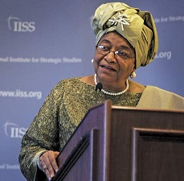

| Independence Day | Capital City | Population: | Area | Languages | Major Religious | Life expectancy | Currency |
|---|---|---|---|---|---|---|---|
| July 26, 1847 | Monroiva | 3.5m | 99,067 sq km | Mande, Kwa or Mel linguistic groups | Christianity, Islam, indigenous beliefs | 56 years (men), 59 years (women) | Liberian dollar |
Liberia was founded in the early 1800s, this was motivated by the domestic politics of slavery and race in the United States as well as by U.S. foreign policy interests. In 1816, a group of white Americans founded the American Colonization Society (ACS) to deal with the “problem” of the growing number of free blacks in the United States by resettling them in Africa. The resulting state of Liberia would become the second (after Haiti) black republic in the world at that time.
Ellen Johnson Sirleaf became Africa's first female president in 2005, two years after the end of a brutal 14-year conflict. She is due to step down following elections in October 2017. She was awarded the Nobel peace prize in 2011 for what the prize committee said were her efforts to secure peace, promote economic and social development and strengthen the position of women. Born in 1938, she is a widowed mother-of-four.
